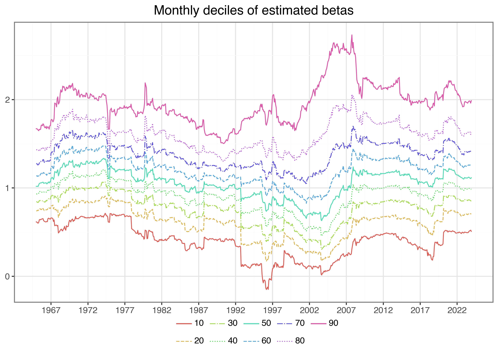
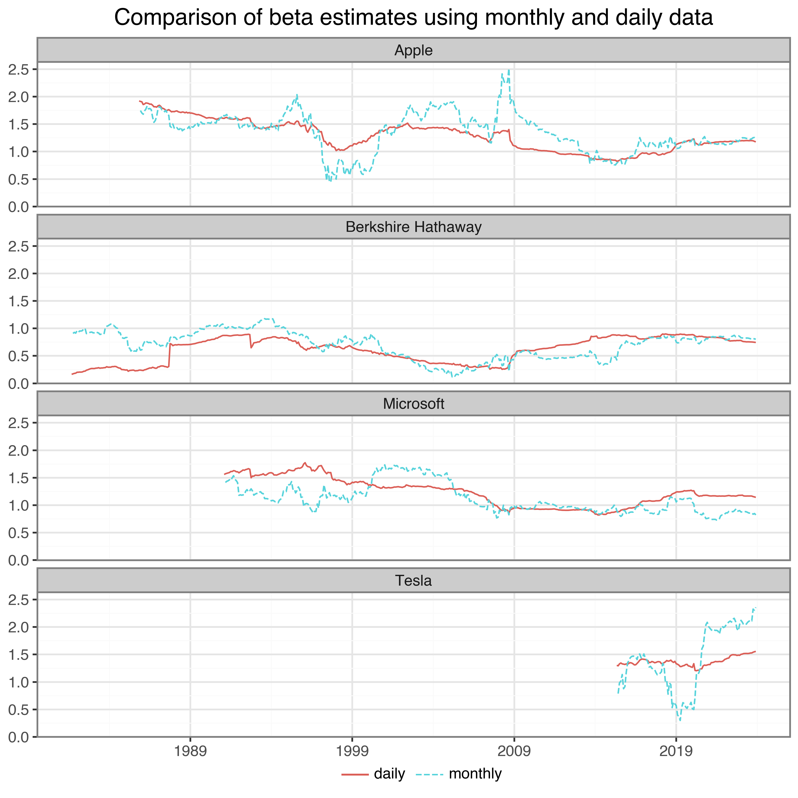
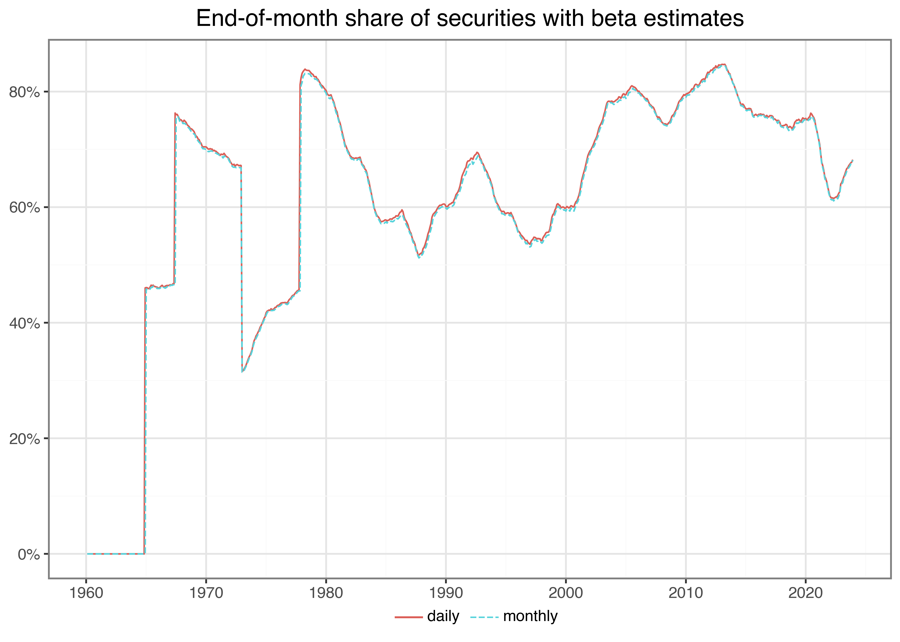

import pandas as pd
import numpy as np
import sqlite3
import statsmodels.formula.api as smf
from statsmodels.regression.rolling import RollingOLS
from plotnine import *
from mizani.breaks import date_breaks
from mizani.formatters import percent_format, date_format
import joblibBeta Estimation
Note
You are reading the work-in-progress edition of Tidy Finance with Python. Code chunks and text might change over the next couple of months. We are always looking for feedback via contact@tidy-finance.org. Meanwhile, you can find the complete R version here.
In this chapter, we introduce an important concept in financial economics: the exposure of an individual stock to changes in the market portfolio. According to the Capital Asset Pricing Model (CAPM) of Sharpe (1964), Lintner (1965), and Mossin (1966), cross-sectional variation in expected asset returns should be a function of the covariance between the excess return of the asset and the excess return on the market portfolio. The regression coefficient of excess market returns on excess stock returns is usually called the market beta. We show an estimation procedure for the market betas. We do not go into details about the foundations of market beta but simply refer to any treatment of the CAPM for further information. Instead, we provide details about all the functions that we use to compute the results. In particular, we leverage useful computational concepts: rolling-window estimation and parallelization.
We use the following packages throughout this chapter:
Compared to previous chapters, we introduce statsmodels for regression analysis and for sliding window regressions, and joblib for parallelization.
Estimating Beta using Monthly Returns
The estimation procedure is based on a rolling-window estimation, where we may use either monthly or daily returns and different window lengths. First, let us start with loading the monthly CRSP data from our SQLite-database introduced in the previous Chapters 2-4.
tidy_finance = sqlite3.connect("data/tidy_finance.sqlite")
crsp_monthly = (pd.read_sql_query(
sql="""SELECT permno, month, industry, ret_excess
FROM crsp_monthly""",
con=tidy_finance,
parse_dates={"month": {"unit": "D","origin": "unix"}})
.dropna()
)
factors_ff3_monthly = (pd.read_sql_query(
sql="SELECT month, mkt_excess FROM factors_ff3_monthly",
con=tidy_finance,
parse_dates={"month": {"unit": "D","origin": "unix"}})
.dropna()
)
crsp_monthly = (crsp_monthly
.merge(factors_ff3_monthly,
how="left",
on="month")
)To estimate the CAPM regression coefficients
\[
r_{i, t} - r_{f, t} = \alpha_i + \beta_i(r_{m, t}-r_{f,t})+\varepsilon_{i, t}
\] we regress stock excess returns ret_excess on excess returns of the market portfolio mkt_excess. Python provides a simple solution to estimate (linear) models with the function smf.ols(). smf.ols() requires a formula as input that is specified in a compact symbolic form. An expression of the form y ~ model is interpreted as a specification that the response y is modeled by a linear predictor specified symbolically by model. Such a model consists of a series of terms separated by + operators. In addition to standard linear models, smf.ols() provides a lot of flexibility. You should check out the documentation for more information. To start, we restrict the data only to the time series of observations in CRSP that correspond to Apple’s stock (i.e., to permno 14593 for Apple) and compute \(\hat\alpha_i\) as well as \(\hat\beta_i\).
model_fit = (smf.ols(
formula="ret_excess ~ mkt_excess",
data=crsp_monthly.query("permno == 14593"))
.fit()
)
model_fit_coefs = model_fit.summary(slim=True).tables[1]
model_fit_coefs| coef | std err | t | P>|t| | [0.025 | 0.975] | |
| Intercept | 0.0102 | 0.005 | 2.003 | 0.046 | 0.000 | 0.020 |
| mkt_excess | 1.3889 | 0.111 | 12.467 | 0.000 | 1.170 | 1.608 |
smf.ols() returns an object of class RegressionModel which contains all information we usually care about with linear models. summary() returns an overview of the estimated parameters. The output above indicates that Apple moves excessively with the market as the estimated \(\hat\beta_i\) is above one (\(\hat\beta_i \approx 1.4\)).
Rolling-Window Estimation
After we estimated the regression coefficients on an example, we scale the estimation of \(\beta_i\) to a whole different level and perform rolling-window estimations for the entire CRSP sample. The following function implements the CAPM regression for a data frame (or a part thereof) containing at least min_obs observations to avoid huge fluctuations if the time series is too short. If the condition is violated, that is, the time series is too short, the function returns a missing value.
def roll_capm_estimation(data, window_size, min_obs):
result = (RollingOLS.from_formula(
formula="ret_excess ~ mkt_excess",
data=data,
window=window_size,
min_nobs=min_obs
)
.fit()
.params["mkt_excess"]
)
result.index = data.index
return resultBefore we attack the whole CRSP sample, let us focus on a couple of examples for well-known firms.
examples = pd.DataFrame({
"permno": [14593, 10107, 93436, 17778],
"company": ["Apple", "Microsoft",
"Tesla", "Berkshire Hathaway"]
})
window_size = 60
min_obs = 48We take a total of 5 years of data and require at least 48 months with return data to compute our betas. Check out the exercises if you want to compute beta for different time periods. It is actually quite simple to perform the rolling-window estimation for an arbitrary number of stocks, which we visualize in the following code chunk and the resulting Figure 1.
beta_example = (crsp_monthly
.merge(examples,
how="inner",
on="permno")
.groupby(["permno"], group_keys=False)
.apply(
lambda x: x.assign(
beta=roll_capm_estimation(x, window_size, min_obs)
)
)
.dropna()
)plot_beta = (
ggplot(beta_example,
aes(x="month", y="beta",
color="company", linetype="company")) +
geom_line() +
scale_x_datetime(breaks=date_breaks("5 year"),
labels=date_format("%Y")) +
labs(x="", y="", color="", linetype="",
title=("Monthly beta estimates for example stocks " +
"using 5 years of data"))
)
plot_beta.draw()
Estimating Beta using Monthly Returns
Next, we perform the rolling window estimation for the entire cross-section of stocks in the CRSP sample. For that purpose, we first identify firm identifiers (permno) for which CRSP contains sufficiently many records.
valid_permnos = (crsp_monthly
.groupby("permno")["permno"]
.count()
.reset_index(name="counts")
.query("counts > @window_size + 1")
)Next, we can apply the code snippet from the example above to compute rolling window regression coefficients for all stocks. This is how to do it with the joblib package to use multiple cores:
number_of_cores = 8
def roll_capm_estimation_for_joblib(permno, group):
beta_values = (RollingOLS.from_formula(
formula="ret_excess ~ mkt_excess",
data=group,
window=window_size,
min_nobs=min_obs
)
.fit()
.params["mkt_excess"]
)
result = pd.DataFrame(beta_values)
result.columns = ["beta"]
result["month"] = group["month"].values
result["permno"] = permno
try:
result["date"] = group["date"].values
result = result[result.groupby("month")["date"].transform("max") == result["date"]]
except(KeyError):
pass
return result
permno_groups = (crsp_monthly
.merge(valid_permnos, how="inner", on="permno")
.dropna()
.groupby("permno", group_keys=False)
)
beta_monthly = (
pd.concat(
joblib.Parallel(n_jobs=number_of_cores)
(joblib.delayed(roll_capm_estimation_for_joblib)(name, group)
for name, group in permno_groups)
)
.dropna()
.rename(columns={"beta": "beta_monthly"})
)Estimating Beta using Daily Returns
Before we provide some descriptive statistics of our beta estimates, we implement the estimation for the daily CRSP sample as well. Depending on the application, you might either use longer horizon beta estimates based on monthly data or shorter horizon estimates based on daily returns.
First, we load daily CRSP data. Note that the sample is large compared to the monthly data, so make sure to have enough memory available.
crsp_daily = (pd.read_sql_query(
sql="""SELECT permno, month, date, ret_excess
FROM crsp_daily""",
con=tidy_finance,
parse_dates={"month": {"unit": "D","origin": "unix"},
"date": {"unit": "D","origin": "unix"}})
.dropna()
)We also need the daily Fama-French market excess returns.
factors_ff3_daily = (pd.read_sql_query(
sql="SELECT date, mkt_excess FROM factors_ff3_daily",
con=tidy_finance,
parse_dates={"date": {"unit": "D","origin": "unix"}})
.dropna()
)For the daily data, we consider around 3 months of data (i.e., 60 trading days) and require at least 50 observations. We make again sure to keep only relevant data to save memory space. However, note that your machine might not have enough memory to read the whole daily CRSP sample. In this case, we refer you to the exercises and try working with loops.
window_size = 60
min_obs = 50
valid_permnos = (crsp_daily
.groupby("permno")["permno"]
.count()
.reset_index(name="counts")
.query("counts > @window_size + 1")
.drop(columns = "counts")
)
crsp_daily = (crsp_daily
.merge(factors_ff3_daily,
how="inner",
on="date")
.merge(valid_permnos,
how="inner",
on="permno")
)Even though we could now just apply the function using groupby() on the whole CRSP sample, we advise against doing it as it is computationally quite expensive. Remember that we have to perform rolling-window estimations across all stocks and time periods. However, this estimation problem is an ideal scenario to employ the power of parallelization. Parallelization means that we split the tasks which perform rolling-window estimations across different workers (or cores on your local machine).
permno_groups = (crsp_daily
.merge(valid_permnos, how="inner", on="permno")
.dropna()
.groupby("permno", group_keys=False)
)
beta_daily = (
pd.concat(
joblib.Parallel(n_jobs=number_of_cores)
(joblib.delayed(roll_capm_estimation_for_joblib)(name, group)
for name, group in permno_groups)
)
.dropna()
.rename(columns={"beta": "beta_daily"})
)Comparing Beta Estimates
What is a typical value for stock betas? To get some feeling, we illustrate the dispersion of the estimated \(\hat\beta_i\) across different industries and across time below. Figure 2 shows that typical business models across industries imply different exposure to the general market economy. However, there are barely any firms that exhibit a negative exposure to the market factor.
beta_industries = (beta_monthly
.merge(crsp_monthly, how="inner", on=["permno", "month"])
.dropna(subset="beta_monthly")
.groupby(["industry","permno"])["beta_monthly"]
.aggregate("mean")
.reset_index()
)
industry_order = (beta_industries
.groupby("industry")["beta_monthly"]
.aggregate("median").sort_values()
.index.tolist()
)
plot_beta_industries = (
ggplot(beta_industries,
aes(x="industry", y="beta_monthly")) +
geom_boxplot() +
coord_flip() +
scale_x_discrete(limits=industry_order) +
labs(x="", y="",
title="Firm-specific beta distributions by industry")
)
plot_beta_industries.draw()
Next, we illustrate the time-variation in the cross-section of estimated betas. Figure 3 shows the monthly deciles of estimated betas (based on monthly data) and indicates an interesting pattern: First, betas seem to vary over time in the sense that during some periods, there is a clear trend across all deciles. Second, the sample exhibits periods where the dispersion across stocks increases in the sense that the lower decile decreases and the upper decile increases, which indicates that for some stocks the correlation with the market increases while for others it decreases. Note also here: stocks with negative betas are a rare exception.
beta_quantiles = (beta_monthly
.groupby("month")["beta_monthly"]
.quantile(q=np.arange(0.1, 1.0, 0.1))
.reset_index()
.rename(columns={"level_1": "quantile"})
.assign(
quantile=lambda x: (x["quantile"] * 100).astype(int)
)
.dropna()
)
plot_beta_quantiles = (
ggplot(beta_quantiles,
aes(x="month", y="beta_monthly",
color="factor(quantile)")) +
geom_line() +
scale_x_datetime(breaks=date_breaks("10 year"),
labels=date_format("%Y")) +
labs(x="", y="", color="",
title="Monthly deciles of estimated betas")
)
plot_beta_quantiles.draw()
To compare the difference between daily and monthly data, we combine beta estimates to a single table. Then, we use the table to plot a comparison of beta estimates for our example stocks in Figure 4.
beta = (beta_monthly
.get(["permno", "month", "beta_monthly"])
.merge(beta_daily.get(["permno", "month", "beta_daily"]),
how="outer",
on=["permno", "month"])
)
beta_comparison = (beta
.merge(examples, on="permno")
.melt(id_vars=["permno", "month", "company"],
value_vars=["beta_monthly", "beta_daily"],
var_name="name", value_name="value")
.dropna()
)
plot_beta_comparison = (
ggplot(beta_comparison,
aes(x="month", y="value", color="name")) +
geom_line() +
facet_wrap("~company", ncol=1) +
scale_x_datetime(breaks=date_breaks("10 year"),
labels=date_format("%Y")) +
labs(x="", y="", color="",
title=("Comparison of beta estimates using monthly " +
"and daily data"))
)
plot_beta_comparison.draw()
The estimates in Figure 4 look as expected. As you can see, it really depends on the estimation window and data frequency how your beta estimates turn out.
Finally, we write the estimates to our database such that we can use them in later chapters.
(beta
.assign(
month = lambda x:
((x["month"]- pd.Timestamp("1970-01-01"))
// pd.Timedelta("1d"))
)
.to_sql(
name="beta",
con=tidy_finance,
if_exists="replace"
)
)3349622Whenever you perform some kind of estimation, it also makes sense to do rough plausibility tests. A possible check is to plot the share of stocks with beta estimates over time. This descriptive helps us discover potential errors in our data preparation or estimation procedure. For instance, suppose there was a gap in our output where we do not have any betas. In this case, we would have to go back and check all previous steps to find out what went wrong.
beta_long = (crsp_monthly
.merge(beta, how="left", on=["permno", "month"])
.melt(id_vars=["permno", "month"],
value_vars=["beta_monthly", "beta_daily"],
var_name="name", value_name="value")
.groupby(["month", "name"])
.aggregate(
share=("value", lambda x: sum(~x.isna()) / len(x))
)
.reset_index()
)
plot_beta_long = (
ggplot(beta_long,
aes(x="month", y="share", color="name",
linetype="name")) +
geom_line() +
scale_y_continuous(labels=percent_format()) +
scale_x_datetime(breaks=date_breaks("10 year"),
labels=date_format("%Y")) +
labs(x=None, y=None, color=None, linetype=None,
title=("End-of-month share of securities with beta " +
"estimates"))
)
plot_beta_long.draw()
Figure 5 does not indicate any troubles, so let us move on to the next check.
We also encourage everyone to always look at the distributional summary statistics of variables. You can easily spot outliers or weird distributions when looking at such tables.
beta_long.groupby("name")["share"].describe()| count | mean | std | min | 25% | 50% | 75% | max | |
|---|---|---|---|---|---|---|---|---|
| name | ||||||||
| beta_daily | 755.0 | 0.984756 | 0.075167 | 0.000000 | 0.989952 | 0.994758 | 0.997238 | 1.000000 |
| beta_monthly | 755.0 | 0.611243 | 0.189933 | 0.069282 | 0.548149 | 0.665266 | 0.741169 | 0.834441 |
The summary statistics also look plausible for the two estimation procedures.
Finally, since we have two different estimators for the same theoretical object, we expect the estimators should be at least positively correlated (although not perfectly as the estimators are based on different sample periods and frequencies).
beta.get(["beta_monthly", "beta_daily"]).corr()| beta_monthly | beta_daily | |
|---|---|---|
| beta_monthly | 1.000000 | 0.313652 |
| beta_daily | 0.313652 | 1.000000 |
Indeed, we find a positive correlation between our beta estimates. In the subsequent chapters, we mainly use the estimates based on monthly data as most readers should be able to replicate them due to potential memory limitations that might arise with the daily data.
Exercises
- Compute beta estimates based on monthly data using 1, 3, and 5 years of data and impose a minimum number of observations of 10, 28, and 48 months with return data, respectively. How strongly correlated are the estimated betas?
- Compute beta estimates based on monthly data using 5 years of data and impose different numbers of minimum observations. How does the share of permno-month observations with successful beta estimates vary across the different requirements? Do you find a high correlation across the estimated betas?
- Filter out the stocks with negative betas. Do these stocks frequently exhibit negative betas, or do they resemble estimation errors?
- Compute beta estimates for multi-factor models such as the Fama-French 3 factor model. For that purpose, you extend your regression to \[ r_{i, t} - r_{f, t} = \alpha_i + \sum\limits_{j=1}^k\beta_{i,k}(r_{j, t}-r_{f,t})+\varepsilon_{i, t} \] where \(r_{j, t}\) are the \(k\) factor returns. Thus, you estimate 4 parameters (\(\alpha_i\) and the slope coefficients). Provide some summary statistics of the cross-section of firms and their exposure to the different factors.
References
Lintner, John. 1965. “Security prices, risk, and maximal gains from diversification.†The Journal of Finance 20 (4): 587–615. https://doi.org/10.1111/j.1540-6261.1965.tb02930.x.
Mossin, Jan. 1966. “Equilibrium in a capital asset market.†Econometrica 34 (4): 768–83. https://doi.org/10.2307/1910098.
Sharpe, William F. 1964. “Capital asset prices: A theory of market equilibrium under conditions of risk .†The Journal of Finance 19 (3): 425–42. https://doi.org/10.1111/j.1540-6261.1964.tb02865.x.